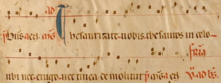
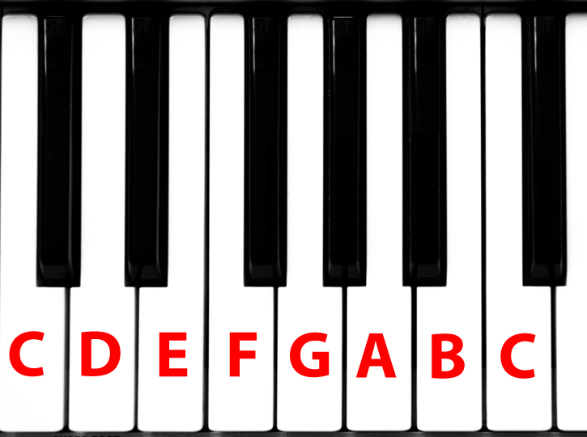

the Music Theory
Firstly here is an example of some early music, written before the standardised stave/staff came into use:
Naming the notes:
Here are the seven alphabetical note names in ascending order. Note the ledger line for the last A, to temporarily extend the stave/staff:

Here are the notes on a piano keyboard:
